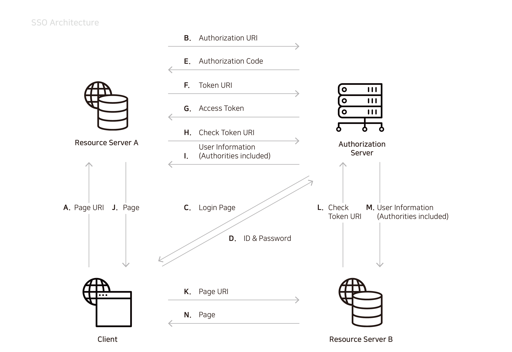

시스템 구성
SSO 시스템 구성도는 다음과 같습니다.

A. Client는 Resource server A에 접속하기 위해 Page URI를 전송합니다.
B. 접속 요청을 받은 Resource server A는 Authorization server에 인증을 받기 위해 Authorization URI를 전송합니다.
C. Authorization server는 인증을 위해 Client에게 Login page를 제공합니다.
D. Client는 ID & Password를 Authorization server에 전송하여 로그인합니다.
E. Authorization server는 Resource server A에게 Authorization code를 발급합니다.
F. Resource server A는 Authorization code를 Token URI에 포함해 Authorization server에 전송합니다.
G. Authorization server는 Token URI를 활용하여 Access token을 Resource server A에 발급합니다.
H. Resource server A는 Access token을 Check token URI에 포함해 Authorization server에 전송하여 유효성을 검증합니다.
I. Authorization server는 Authorities를 포함한 User information을 Resource server A에 전송합니다.
J. Resource server A는 사용자의 접근 권한에 따른 페이지(user_page.jsp, admin_page.jsp, 404_page.jsp)를 Client에게 제공합니다.
K. Client는 Resource server B에 접속하기 위해 Page URI를 전송합니다.
L. Client는 Access token을 보유한 상태이기 때문에 B~G 과정을 거치지 않습니다.
보유한 Access token의 유효성을 검증하기 위해 Access token을 Check token URI에 포함해 Authorizationserver에 전송합니다.
M. Authorization server는 Authorities를 포함한 User information을 Resource server B에 전송합니다.
N. Resource server B는 사용자의 접근 권한에 따른 페이지(user_page.jsp, admin_page.jsp, 404_page.jsp)를 Client에게 제공합니다.